Formulário e Estatísticas sobre o Go Brasileiro
Para aqueles que acompanharam meu post no grupo Go Brasil do Facebook, peço desculpas pela demora. Mas confesso que uma pequena justificativa pelo menos há: em um grupo de mais de 1000 pessoas, só obtive 36 respostas. É bastante desmotivante presenciar algo assim, e isso resume bem o cenário do Go brasileiro, uma comunidade que não consegue crescer organicamente. Globalmente, é fato que jogos de tabuleiro possuem dificuldades para desenvolver e manter suas bases; porém, dado que temos uma sede da Nihon Kiin e outros eventos asiáticos, o nosso caso chega a ser patológico.
De qualquer forma, obtive já um número razoável para começar a tirar algumas estatísticas de nossa população goísta — antigamente, antes da era dos dados massivos, era comum estimar que 30 amostras seriam já suficientes para se obter primeiras estatísticas. Depois de reunir mais sugestões e consultar alguns amigos, pretendo sedimentar um questionário rotineiro que deixarei ativo de tempos em tempos no Facebook e aqui.
Como fatores mais surpreendentes da pesquisa até agora, mencionaria o fato de que há, sim, bastante vontade (> 64%) em se deslocar para jogar Go ao vivo, além do considerável interesse em aulas — aqui, fico um pouco assustado com o fato de que a grande maioria colocou que não pagaria nada por elas: o professor viveria de quê? A sua atenção tem poderes nutritivos? —, com uma média de remuneração de aproximadamente R$ 40, nada mal se houvesse volume considerável de demanda.
Este relatório está divido nas seguintes macro-seções:
- Informações Gerais
- Interesses
- Sugestões
Já que ele será algo regular, acabei criando código em Python para gerar os gráficos. Caso queira, você pode encontrá-lo neste repositório Github.
Importante Sempre que o gráfico/histograma estiver com as barras na horizontal era possível marcar mais de uma opção para a pergunta.
Adultos de meia idade provavelmente predominam na população goísta brasileira.
Grande parte dos que responderam possuem nível alto.
A maior parte dos respondentes são jogadores mais experientes.
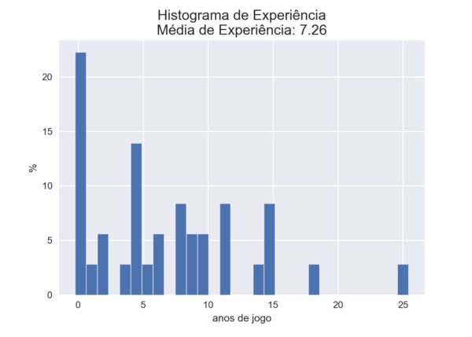O tempo aqui é normalizado por semana. Há algumas pessoas se dedicando consideravelmente ao jogo.
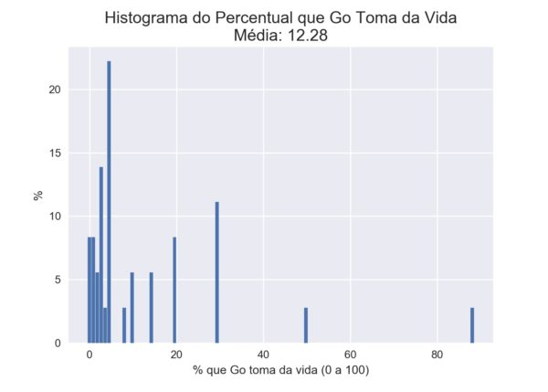Aqui, pedimos para que o jogador ranqueie Go dentre todos os jogos que conhece.
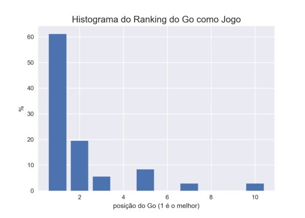O 2.8% representa uma amostra somente.
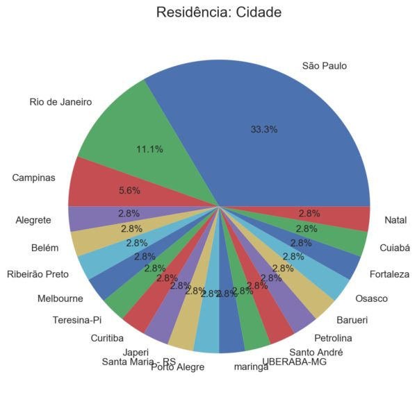Alguns servidores não haviam sido listados inicialmente, mas, graças a sugestões, eu os incluí mais tarde, o que pode mudar um pouco os resultados. Porém, eles são tão pouco utilizados que não haverá muitas mudanças significativas.
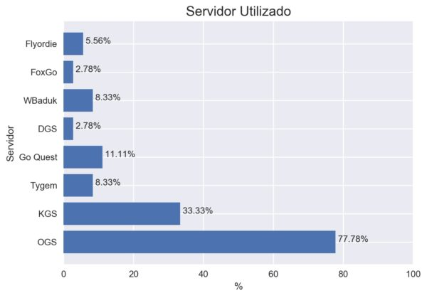Como já era de se esperar, a maior parte dos jogadores brasileiros joga à noite, o que se deve ao fato de muitos trabalharem durante o dia.
A esmagadora maioria das pessoas fala inglês, mas há muitas pessoas com habilidades linguísticas variadas.
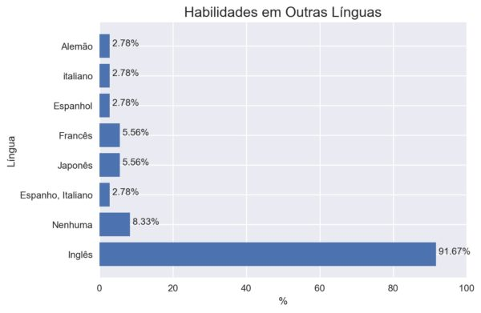Considero que Go, visto que simulação das emoções e lições da vida real em velocidade muito acelerada, me ajudou muito a melhorar como ser humano e profissional. Fico feliz em saber que quase todos os outros experienciaram o mesmo que eu.
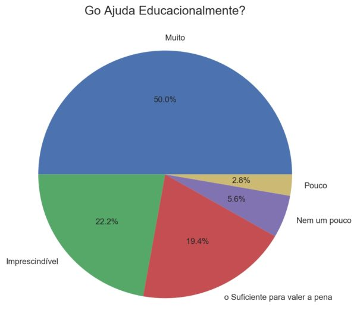Os jogadores mais assíduos que conheci partilham da mesma opinião de que é difícil se dedicar ludicamente ao Go. Contudo, não é essa a opinião dos brasileiros aparentemente.
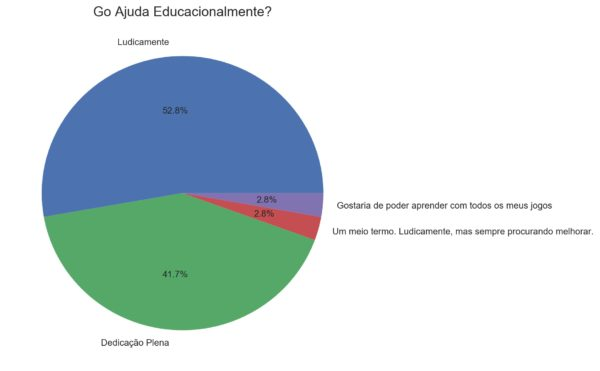Até que há uma quantidade razoável de pessoas com bastantes livros. A média aqui não é muito relevante pois a distribuição possui uma cauda longa.
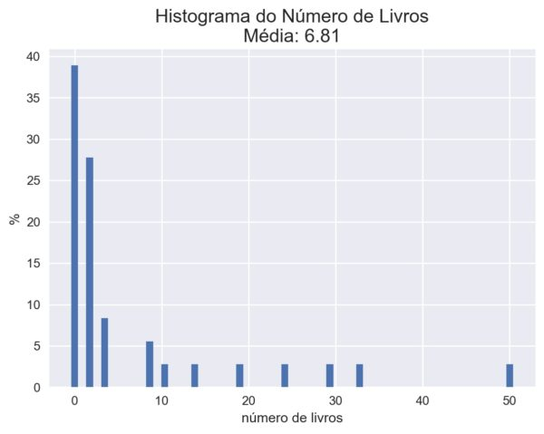Há bastante interesse em se deslocar para jogar ao vivo.
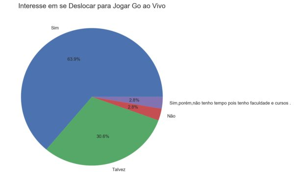Apesar de amigos meus advogarem por quarta ou quinta como dia para jogar ao vivo — devido ao fato de as pessoas quererem sair no final de semana —, a maior parte dos jogadores prefere fazê-lo aos sábados.
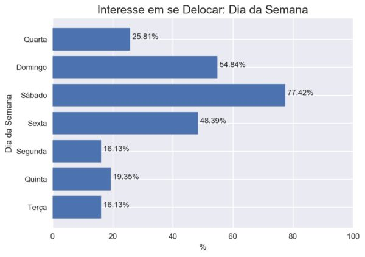Interessante notar que o Sesi é tão popular. A Nihon Kiin, apesar de ser um espaço criado para se jogar Go, não chama tanto o interesse dos respondentes — não esqueçamos o fato de que há muitas pessoas de fora de São Paulo preenchendo o formulário também.

Até que o tempo aceitável máximo de deslocamento não é tão baixo. É possível até mesmo atravessar certas cidades com eles.
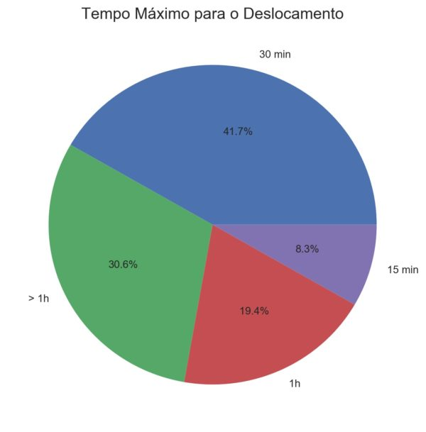O tempo desta pergunta é normalizado por semana. Provavelmente, quem respondeu números muito grandes pensou que era minutos por semana.
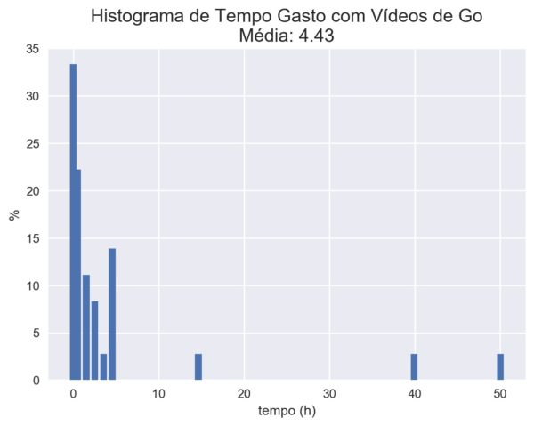Há bastante interesse em aulas.
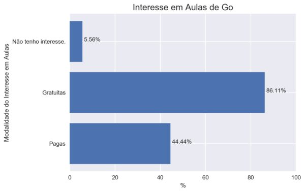O valor médio não é muito baixo, mas o fato de que muitos não se disporiam a pagar nada é muito desmotivante par quem quiser se aventurar na área. A pessoa viverá de que se não houver pagamento? Sua sabedoria e experiência não possuem valor monetário?

Depois de muito viajar e jogar, descobri, finalmente, que, na verdade, o mais importante não é progredir, mas, sim, vencer. Não sei se muitos outros jogadores caem nessa mesma armadilha em que eu caí (acredito que sim), mas a resposta obtida foi que progredir é sim mais importante.
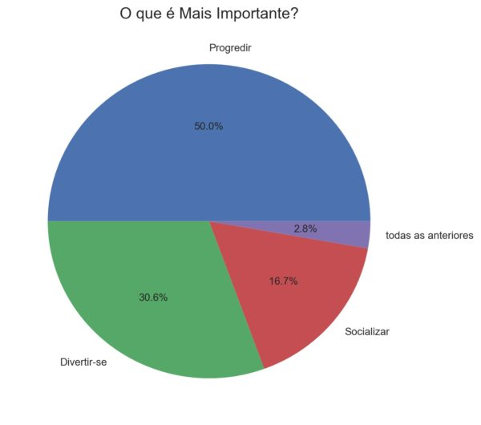Houve sugestão de que deveria haver uma terceira opção para aqueles que dão a mesma importância para ambas as modalidades. Francamente, prefiro não incluí-la pois muitos se sentiriam seduzidos por ela, uma vez que seria a supostamente mais sábia.
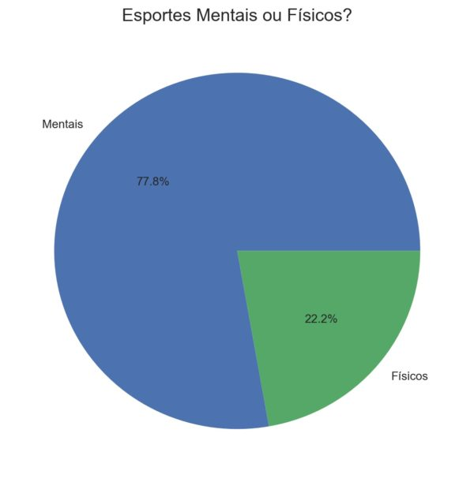O interesse grande aqui me surpreendeu um bocado. Se ele se concretizaria em ações é outra história.
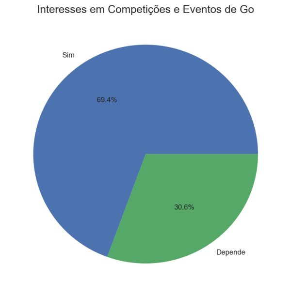Esta é a única pergunta com alto teor de especificidade do formulário inteiro, só a incluí devido ao Torneio Iberoamericano deste ano ser em São Paulo.
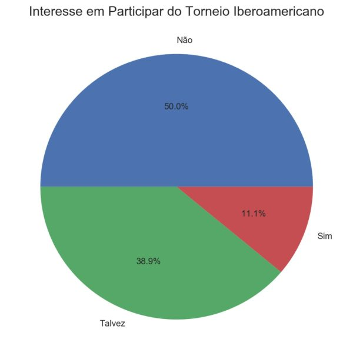Há muito o que melhorar. Não me atentei a certos detalhes e à expansão do leque de questões pois meu intuito inicial era só fazer um primeiro teste para ver como a comunidade reagiria e quais seriam os resultados. No entanto, houve bastante apoio ao longo deste mês e pretendo que este formulário se torne algo regular e que fique fixado não só no grupo Go Brasil do Facebook, como no meu próprio site.
Duas mudanças que implementarei já na próxima versão serão: inclusão opcional de email; e adicionar uma seção para expectativas e avaliações sobre o cenário do Go brasileiro.